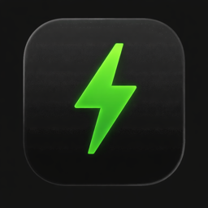

Your menu bar. Your choice.
Show power usage, a battery icon, a percentage, or a combination. Battery controls appear only on Macs with a battery.
A LITTLE UTILITY FOR YOUR MAC
A small view of what your Mac is using.
Right where you can see it.
A SMALL NUMBER.
A CLEARER PICTURE.
Your Mac’s power.
Without the extra window.
Interactive illustration · Sample values, not a live reading. Try the display modes above.
JUST WHAT YOU NEED.
See a change when your Mac gets busy.
Keep the numbers that matter to you.
Choose a refresh interval from one to ten seconds. The default is two. Sensor reads run in the background and pause during sleep.
In the app: a reading every 2 seconds.
Show power usage, a battery icon, a percentage, or a combination. Battery controls appear only on Macs with a battery.
See battery power separately from system power. Know when your Mac is charging, running on battery, or plugged in without charging.
A native Mac app with no account or analytics. It keeps just the current reading and redraws battery artwork only when it changes.
LESS, BUT CONSIDERED.
Power readings stay on your Mac.
Update checks connect to GitHub.
Built for macOS, with a window that opens only when you need Preferences.
Signed Sparkle updates, a manual check, and a setting for automatic checks. Install when you’re ready.
Sensor support varies by Mac. If a reading is unavailable, WattBar shows a dash instead of an invented zero.
A FEW DETAILS
Small app. Straight answers.
Download the ZIP, unzip it, and move WattBar.app to Applications.
Version 1.2.0 is ad-hoc signed and has not been notarized by Apple. macOS may block its first launch. Read the release notes before downloading.
System Total uses your Mac’s system power sensor. Battery shows the magnitude of the battery’s charge or discharge power. Where a battery sensor is unavailable, WattBar can calculate battery power from voltage and current.
When running on battery, that calculation can also estimate system power. It is not used as total system power while plugged in. These are hardware readings and estimates, not a wall-socket energy meter.

A LITTLE UTILITY. A CLEARER VIEW.
A little more awareness. Right in your menu bar.
Download for Mac Not yet Apple-notarized. Read the installation note ↗